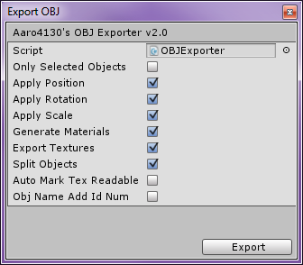

This document will teach you how to do a basic export. To do a more advanced export check out exporting options .
To perform a basic export, select File>Export>Wavefront OBJ, leave all options as default and click Export!
TIP : Want to export one object and have it centered when you import it to your 3D application? Untick "Apply Position"